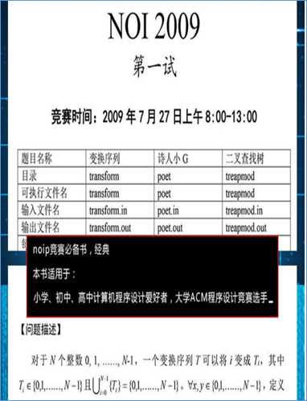
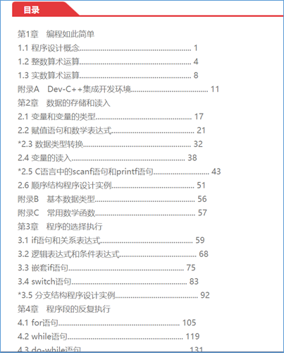

2016年11月，中国计算机学会CCF组编的面向国际信息学奥赛OI的C/C++教材《CCF中学生计算机程序设计》，提出了“普及计算机科学教育、培养中学生的计算思维能力……”[[i]]。也是基于C/C++这些计算机语言，培养计算思维/数字化计算思维/数字思维的倡导（见图 F-1）。
教育数字思维视角的信息学奥赛OI/NOI（.Net平台C#语言→迁移拓展→OS平台C/C++语言）（本书→迁移拓展→《CCF中学生计算机程序设计》），则是探索思路之一。
 
图 F-1中国计算机学会CCF提出基于C/C++这些计算机语言培养中学生的计算思维能力